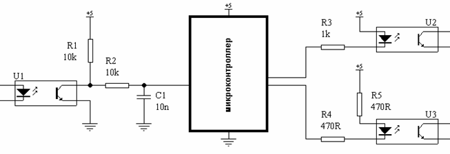

Фиг.8
Алексей Кузнецов
Источников помех, способных вызвать сбой или отказ устройства, существует бесчисленное множество. Однако наиболее часто встречаются следующие помехи:
Существуют российские и международные стандарты, оговаривающие требования к электромагнитной совместимости (ЭМС). Стандарты аккумулируют многолетний инженерный опыт. Однако сами по себе стандарты являются тяжело усваиваемым материалом, малопригодным для непосредственного руководства при проектировании или анализе поведения устройств. Стандарты разработаны таким образом, чтобы при испытании устройств достаточно аккуратно имитировать реальные помехи.
Целесообразно все помехи разделить на три абстрактных типа:
Практически все реальные помехи могут быть представлены как комбинации этих трех абстрактных. Например, EFT помехи - это пачки наносекундных помех НП, а ESD - это комбинация одиночной НП и одиночной МП. Поэтому, если устройство устойчиво ко всем трем абстрактным типам помех, то с высокой степенью вероятности оно будет устойчиво и к реальным помехам, независимо от их происхождения.
Вопрос устойчивости к МП в большой степени является вопросом обеспечения надежности, пожаробезопасности и электробезопасности. Вопросы обеспечения устойчивости к МП и РП в данной статье не рассматриваются.
Этот тип помех является причиной большинства сбоев. При всем своем разнообразии, наносекундные помехи обладают некоторыми общими свойствами:
Чтобы лучше представить себе этот тип помех, полезно обратиться к стандарту МЭК 61000-4-4 (ГОСТ Р 51317.4.4-99). В нем сказано, что EFT помехи должны имитироваться пачками треугольных импульсов. Длительность переднего фронта у каждого импульса 5 нс, длительность импульса 50 нс на уровне 50%. Внутреннее сопротивление генератора импульсов 50 Ом, генератор должен быть заземлен.
Амплитуда НП-импульсов зависит от того, к какому классу по помехоустойчивости должно относиться испытуемое устройство, а также от того, куда подаются импульсы при испытании, см. табл 1. Возможны испытания и более жесткие, чем указанные в таблице, если это требуется по условиям эксплуатации прибора. Однако в подавляющем большинстве случаев перечисленных в таблице степеней жесткости достаточно. Самые легкие испытания применяются к бытовой технике, самые жесткие - к промышленным и бортовым устройствам.
Таблица 1. Амплитуды НП импульсов
| Степень жесткости испытаний |
Электропитание, заземление | Сигналы ввода / вывода | ||
| Амплитуда импульсов, кВ | Частота повторения, кГц | Амплитуда импульсов, кВ | Частота повторения, кГц | |
| 1 | 0.5 | 5 | 0.25 | 5 |
| 2 | 1 | 5 | 0.5 | 5 |
| 3 | 2 | 5 | 1 | 5 |
| 4 | 4 | 2.5 | 2 | 5 |
В линии питания и заземления тестовые НП импульсы инжектируются непосредственно, без развязки. С учетом достаточно низкого сопротивления генератора сигналов, величины импульсных токов, протекающих в цепях земли, могут достигать огромных величин. Импульсные токи НП, протекающие по земляным цепям устройства, создают заметные падения напряжений между различными земляными точками, это может вызвать сбой.
В сигнальные цепи тестовые НП импульсы инжектируются через "емкостные клещи", куда по очереди закладываются все провода, приходящие к устройству. Емкость связи невелика, единицы пикофарад, но для НП импульсов даже сравнительно малые емкости не являются серьезным препятствием, настолько широк их спектр. НП, приходящая в устройство с сигнальных цепей, рано или поздно или поздно попадает на землю устройства и далее проходит теми же путями, как и НП, инжектированная в цепь заземления. Поскольку, согласно стандарту, амплитуда сигнальной НП вдвое меньше чем земляной, попавшая на землю сигнальная НП в дальнейшем уже не может вызвать эффекта худшего, чем земляная НП. Однако до того как сигнальная НП попадет на землю, она может вызвать сбой непосредственно в цепях, связанных с данным сигналом.
Стандарт оговаривает, что испытуемое устройство должно находиться на изолирующей подставке на расстоянии 100 мм от сплошной заземленной поверхности. Это немаловажное требование, т.к. между устройством и землей образуется емкостная связь, иногда одного этого достаточно для сбоя.
Фиг.1
На фиг.1 условно показано некое устройство, состоящее из узлов 1...4. Узлы 1 и 2 не подключены ко внешним цепям, но они могут сбиваться из-за "перекосов" внутренней земли, вызванными прохождением тока помехи Ignd (на фиг. 1 показана помеха, инжектируемая в линию заземления). Узлы 3 и 4 подключены к внешним устройствам, поэтому, помимо сбоев из-за "перекосов" земли, дополнительно они подверженны сбоям из-за помеховых токов I1 и I2, проходящих через их терминалы.
Два типа проверок, оговоренных стандартом (со стороны земли и со стороны сигналов), взаимодополняют друг друга.
Оговоренные стандартом проверки, а также фиг.1, позволяют выделить три составляющих помехоустойчивости устройства к НП, рассматриваемые далее более подробно:
Как уже упоминалось, в момент прохождения НП по внутренней земле устройства создается заметная разность потенциалов между различными точками земли ("перекосы"). Например, если узлы 1 и 2 (см фиг.1) являются цифровыми узлами, собранными на ТТЛШ логике, то разность напряжений примерно в 1 В между точками "а" и "б" способна вызвать сбой.
Основную роль в создании падений напряжений играет не резистивная, а индуктивная составляющая цепей заземления. За счет огромной крутизны передних фронтов НП, даже мизерных индуктивностей земляных полигонов или земляных слоев в печатных платах бывает достаточно для сбоя.
Рассмотрим эквивалентную схему фиг.2.
Фиг.2
Источник помехи - генератор треугольных импульсов Vgen. Фронт нарастания помехи 5 нс, длительность по уровню 50% равна 50 нс (см. эпюру напряжения на фиг.2), сопротивление источника помехи Rgen равно 50 Ом, как оговорено стандартом. Амплитуда помехового импульса 1 кВ, что соответствует сравнительно "мягким" испытаниям согласно табл.1.
Конденсатор Ccpl представляет собой емкость связи, а Lw - индуктивность проводов, подключенных к устройству. Для схемы фиг.1 емкость связи Ccpl состоит из параллельно включенных Cx1, Cx2 плюс, возможно, емкостей, привносимых внешними устройствами.
Индуктивность Lw представляет суммарную индуктивность всех проводников на пути помехи, за исключением индуктивности земли на рассматриваемом участке (в нашем случае - на участке "а"-"б" фиг.1), которая обозначена как Lgnd. Предположим, что индуктивность земли Lgnd равна 10 нГ, а индуктивность остальных цепей - 100 нГ.
Для ориентировки, печатный проводник шириной 5 мм и длиной 10 мм имеет индуктивность более 10 нГ; проводник шириной 0.35 мм и длиной 10 мм - примерно 17 нГ. Квадратный полигон размерами 25х25 мм имеет индуктивность более 20 нГ.
Фиг.3
Фиг.3 показывает падение напряжения на Lgnd для следующих случаев:
При прохождении помехи на индуктивности внутренней земли устройства создается падение напряжения достаточное для сбоя. Увидеть такую помеху в земле схемы при помощи запоминающего осциллографа весьма затруднительно по ряду причин, в том числе - по причине ограниченной скорости сэмплирования большинства современных осциллографов.
Из этого следует, что даже сплошной земляной слой не спасет устройство фиг.1 от сбоев, и в нем "перекосы" земляных потенциалов при прохождении НП могут достигать десятков вольт.
Устойчивость устройства к воздействию НП не может быть достигнута только за счет утолщения земляных проводников, заливки свободных мест печатной платы земляными полигонами или использования многослойных плат. За счет одних только "толстых" земель можно получить выигрыш в помехоустойчивости примерно в 1.5 - 3 раза, что, на фоне помеховых сигналов фиг.3, совершенно недостаточно.
Развязка внешних сигналов при помощи оптронов тоже слывет хорошим средством повышения помехоустойчивости, но на самом деле не является надежной защитой от НП. Типично емкость оптрона равна 0.5 пФ, при подстановке этого значения в качестве Ccpl падение напряжения на индуктивности Lgnd в схеме фиг.2 уменьшается до 4 В, что все равно достаточно для сбоя. Если устройство имеет несколько опторазвязанных линий ввода-вывода, то емкость Ccpl будет, соответственно, больше.
Фиг.4
Устройство фиг.4 можно представить так: внутренняя земля устройства разделена на две части, чистую ("а" - "в") и грязную ( в - г ). По чистой земле помеховые токи не протекают, к этой земле можно присоединять все узлы, потенциально чувствительные к помехам (узлы 1 и 2). Помеховые токи текут только по грязной земле, с которой можно связывать только узлы нечувствительные к помехам (узлы 3 и 4).
Реальная картина вряд ли будет настолько идиллическая, как показанная на фиг.4. Паразитную емкость Сх очень редко удается сосредоточить только в грязной земле, частично она существует и в чистой левой части. За счет этой емкости полностью избавиться от помеховых токов в чистой земле не удается.
Проиллюстрируем сказанное несколькими примерами.
Пример 1
На фиг.5 представлена схема кварцевого генератора микроконтроллера. Основу генератора составляет скоростной инвертирующий усилитель, встроенный в микроконтроллер. Режим работы по постоянному току задается встроенным высокоомным резистором, включенным между входом и выходом этого усилителя. Для корректной работы генератора дополнительно к внешнему кварцевому резонатору Х1 требуются два конденсатора малой емкости, С1 и С2. Конденсаторы и земляная ножка микропроцессора подключены к внутренней земле устройства.
Фиг.5
Фиг.6
На фиг.6 показаны примеры разводки этого узла на печатной плате.
Фрагмент слева разведен обычным образом, в предположении что потенциалы земель во всех точках печатной платы равны. Конденсаторы С1 и С2 подключены к земле точно так же, как и все остальные элементы схемы, толщина земельных проводников выбрана большой. Такая разводка встречается часто, но, к сожалению, она не обеспечивает хорошей помехоустойчивости.
Фрагмент справа разведен таким образом, чтобы помеховый ток не протекал по дорожке, соединяющей конденсаторы С1 и С2 с земляной ножкой микроконтроллера. Эта дорожка образует участок чистой земли. Помехоустойчивость устройства с такой разводкой максимальна.
Пример 2
Вход сброса микроконтроллера является еще одной цепью, подверженной влиянию наносекундных помех. Нередко разработчики игнорируют этот очевидный факт и используют разветвленную цепь сброса, непосредственно подключенную к различным узлам на плате. Перекос земель между источником сигнала сброса (часто это супервизор питания) и микроконтроллером вызывает ложный сброс устройства.
Схемотехнически решить эту проблему нетрудно, достаточно на вход микроконтроллера добавить простую RC-цепочку, как показано на фиг.7. Однако такое решение должно сопровождаться и правильной разводкой земель, иначе никакой пользы оно не принесет.
Требования к разводке дорожки, соединяющей С3 с земляной ножкой микроконтроллера, такие же как для первого примера: никакие другие детали кроме С3 к этой дорожке подключать нельзя. Исключение составляют только конденсаторы обвязки кварца (С1 и С2 на фиг.5).
Фиг.7
Пример 3
Обеспечить высокую помехоустойчивость устройства можно на этапе общей компоновки. Типичное устройство, при компоновке которого вопросы помехоустойчивости не были приняты во внимание, показано на фиг. 8. Для подключения внешних сигналов и питания в нем использованы все четыре кромки печатной платы. Микропроцессор расположен почти в центре печатной платы, то есть в месте максимально подверженном влиянию наносекундных помех. В случае использования сплошной земли, очень вероятно что такое устройство будет сбоить.
Фиг.8
Не меняя компоновки, существенного улучшения помехоустойчивости в таком устройстве можно достичь, если разделить земли на чистую и грязную, как условно показано на фиг.8. Наружный контур земли является грязной землей, он специально предназначен для распространения наносекундных помех. К грязной земле нельзя подключать устройства, чувствительные к помехам.
Внутренний "полуостров" чистой земли соединенен с грязной землей в одной точке. Во все сигнальные линии, проходящие между чистой и грязной землями, необходимо добавить резисторы или дроссели, чтобы преградить путь помехам (барьеры).
Дальнейшее улучшение помехоустойчивости достигается перекомпоновкой устройства, как показано на фиг.9. Видно, что все терминалы сосредоточены с одной "грязной" стороны платы. Тем самым путь распространения помех по земле платы значительно сокращен.
Фиг.9
После того как внутренние земли устройства разделены на чистые и грязные, возникает вопрос - как предотвратить проникновение помех из грязной земли в чистую? Например, в устройстве фиг.4 узел 2 подключен к чистой земле, но он обменивается сигналами с узлом 3, который подвержен влиянию помех. В приведенном выше примере 3 было упомянуто, что сигнальные цепи, соединяющие узлы на чистой и грязной землях должны содержать помеховые барьеры - резисторы или дроссели. Практика показывает, что повсеместное использование барьеров обычно повышает помехоустойчивость устройства в несколько раз.
Пример 4
Рассмотрим микроконтроллер, управляющий мощной нагрузкой при помощи реле. Для управления реле используется биполярный транзистор.
Фиг.10
Контакты реле являются источником наносекундных помех. Кроме того, внешние помехи достаточно легко проходят "сквозь" реле за счет его паразитной проходной емкости и емкостей монтажа. Вместе с тем, ни реле, ни транзистор Q1, сами по себе влиянию НП не подвержены.
Земляной вывод микроконтроллера VSS подключен к чистой земле, эмиттер транзистора Q1 - к грязной. Резистор R1, помимо своей основной функции, выполняет роль барьера, препятствующего распространению помех из грязной части в чистую. Проходная емкость резистора как правило мала, порядка 0.2...0.3 пФ, поэтому резисторы создают эффективный барьер для НП. В особо тяжелых случаях для уменьшения проходной емкости можно включать по два-три резистора последовательно.
Если бы вместо биполярного использовался полевой транзистор, то R1 пришлось бы поставить именно в качестве барьера, хотя для функционирования схемы он был бы и не нужен.
Пример 5
Другой типичный пример - подключение оптронов к микроконтроллеру. На фиг.11 представлен фрагмент входной и выходной оптронной развязки.

Фиг.11
Эмиттер входного оптрона U1 подключен к грязной земле, т.к. за счет проходной емкости в 0.5 пФ оптрон полупрозрачен для НП. Сам низкоскоростной оптрон достаточно безразличен к НП, но надо заметить, что оптроны с подключенным выводом базы фототранзистора иногда "ловят помеху", поэтому предпочтительней использовать оптроны без вывода базы.
Резистор R1 может быть подключен как к грязному, так и к чистому питанию, поскольку сам резистор является барьером, препятствующим прохождению НП на чистое питание.
Резистор R2 величиной 1к...100к служит помеховым барьером между оптроном и микроконтроллером. Конденсатор С1 не является обязательным элементом, однако наличие этого конденсатора дополнительно улучшает помехоустойчивость, так как уменьшает помеховый ток, протекающий по земляной ножке микроконтроллера. С1 и микроконтроллер подключены к чистой земле.
Анод светодиода выходного оптрона U2 подключен к грязному питанию +5В. Токозадающий резистор R3 одновременно служит помеховым барьером. В особо тяжелой помеховой обстановке полезно зашунтировать светодиод оптрона конденсатором 1...10 нФ, или хотя бы резистором.
В случае когда невозможно или неудобно подключать оптрон к грязному питанию, можно разделить токозадающий резистор на два, как это показано для оптрона U3. Резистор R5 служит помеховым барьером между оптроном и чистой шиной питания +5В.
Часть помехового тока на фиг.1 протекает через емкость связи Сх. Вспомним, что при испытании устройства на помехоустойчивость оно должно находиться на изолирующей подставке на высоте 100 мм над сплошной земляной поверхностью. Иногда одной только емкости связи с землей бывает достаточно для сбоя устройства.
Разделение земель на чистую и грязную само по себе не уменьшает суммарную величину емкостной связи. Соотношение емкостей связи для чистой и грязной земель соответствует отношению их площадей.
Вполне очевидными методами борьбы с емкостными связями является перераспределение земель, уменьшение площадей проводников и частичное экранирование.
Обратите внимание на положение микроконтроллера на фиг.9. Он расположен в углу платы, поэтому за счет емкостной связи сквозь него будет течь сравнительно небольшой ток. На фиг.8 микроконтроллер расположен иначе. Большой полигон чистой земли справа от него имеет значительную емкостную связь с истинной землей, поэтому вероятность сбоя будет намного больше.
Пример 6
На фиг.12 показаны два варианта разводки земляного полигона под микроконтроллером. Вместо кварца и конденсаторов используется трехвыводной керамический резонатор для монтажа на поверхность Х1. Разводка выполнена для гипотетического "правильного" микроконтроллера, разработчики которого позаботились о помехоустойчивости и расположили земляной вывод между выводами генератора. Это не утопия, микроконтроллеры семейства M16C фирмы Ренесас, которые являются одними из самых помехоустойчивых 16-битных микроконтроллеров, действительно имеют подобное расположение выводов.
Фиг.12
Неиспользованные выводы микроконтроллера подключены к внутреннему земляному полигону.
На фиг.12 слева земляной полигон соединен с чистой землей платы несколькими переходными отверстиями. За счет этого устройство оказывается не помехоустойчивым. Помеховый ток, протекающий чистой земле и уходящий в истинную землю через емкостную связь, создает градиент потенциала ("перекос"). Переходные отверстия передают перекос на земляной полигон микроконтроллера. Помеховый ток частично протекает через ножки микроконтроллера, подключенные к полигону, что может вызвать сбой.
На фиг.12 справа земляной полигон микроконтроллера соединен с чистой землей в одной точке, рядом с земляной ножкой микроконтроллера. Помехоустойчивость устройства максимальна, т.к. чистая земля на противоположной стороне платы при этом становится разновидностью экрана, защищающего "сверхчистую" землю полигона.
Помимо внешних источников наносекундных помех, различные узлы внутри устройства сами могут генерировать взаимные помехи.
Современные цифровые микросхемы, особенно БИС, тоже являются источниками НП. В момент переключения сотни и тысячи транзисторов внутри БИС меняют свои состояния, в результате сотни и тысячи паразитных емкостей перезаряжаются (например, емкости затворов в КМОП микросхемах). В результате через ножки земли и питания микросхем протекают импульсные токи наносекундной и суб-наносекундной длительности и большой амплитуды. Распространяясь по шинам земли и питания платы, эти токи несколько ухудшают суммарную помехоустойчивость устройства, но сами по себе, как правило, причиной сбоев не являются.
Для уменьшения вредного влияния этих токов, в цепи питания рядом с микросхемами ставят керамические развязывающие конденсаторы. Конденсаторы должны стоять как можно ближе к ножкам земли и питания, чтобы уменьшить размер контура, по которому циркулируют токи перезаряда.
Сказанное является прописной истиной. Тем не менее, достаточно часто приходится слышать такие высказывания: "мое устройство сбоит, я поставил больше конденсаторов в питание, а оно все равно сбоит". Складывается впечатление, что некоторые разработчики считают, будто развязывающе конденсаторы ставятся для защиты от внешних помех. Это, конечно, заблуждение. Как следствие такого заблуждения, иногда встречаются платы, где развязывающие конденсаторы стоят вдалеке от микросхем, хотя ничто не мешало поставить их гораздо ближе к выводам питания.
Особого рассмотрения заслуживает микросхема супервизора питания. Как известно, срабатывает она нечасто, так что НП помех практически не создает. Однако она сама подвержена влиянию наносекундных помех, поэтому вблизи супервизора питания необходимо ставить керамический развязывающий конденсатор. Это редкий случай, когда такой конденсатор и в самом деле является фильтром для внешних помех.